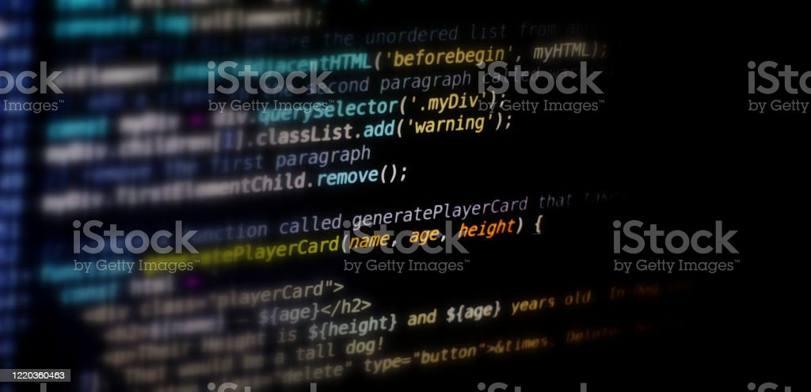

Site Pessoal - Victor Oliveira Silva Costa
Post nº1

Link para o youtube
Email do Victor
Nascido no subúrbio nos melhores dias
Com votos da família de vida feliz
Andar e pilotar um pássaro de aço
Sonhava ao fim do dia ao me descer cansaço
Com as fardas mais bonitas desse meu país
O pai de anel no dedo e dedo na viola
Sorria e parecia mesmo ser feliz
Eh, vida boa
Quanto tempo faz
Que felicidade!
E que vontade de tocar viola de verdade
E de fazer canções como as que fez meu pai
E de fazer canções como as que fez meu pai
E de fazer canções como as que fez meu pai
Num dia de tristeza, me faltou o velho
E falta lhe confesso que ainda hoje faz
E me abracei na bola e pensei ser um dia
Um craque da pelota ao me tornar rapaz
Um dia chutei mal e machuquei o dedo
E sem ter mais o velho pra tirar o medo
Foi mais uma vontade que ficou pra trás
Eh, vida à toa
Vai no tempo, vai
E eu sem ter maldade
Na inocência de criança de tão pouca idade
Troquei de mal com Deus por me levar meu pai
Troquei de mal com Deus por me levar meu pai
Troquei de mal com Deus por me levar meu pai
E assim crescendo eu fui me criando sozinho
Aprendendo na rua, na escola e no lar
Um dia eu me tornei o bambambã da esquina
Em toda brincadeira, em briga, em namorar
Até que um dia eu tive que largar o estudo
E trabalhar na rua sustentando tudo
Assim, sem perceber, eu era adulto já
Eh, vida voa
Vai no tempo, vai
Ai, mas que saudade
Mas eu sei que lá no céu o velho tem vaidade
E orgulho de seu filho ser igual seu pai
Pois me beijaram a boca e me tornei poeta
Mas tão habituado com o adverso
Eu temo se um dia me machuca o verso
E o meu medo maior é o espelho se quebrar
E o meu medo maior é o espelho se quebrar
E o meu medo maior é o espelho se quebrar
E o meu medo maior é o espelho se quebrar
E o meu medo maior é o espelho se quebrar
E o meu medo maior é o espelho se quebrar
E o meu medo maior é o espelho se quebrar...